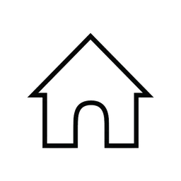
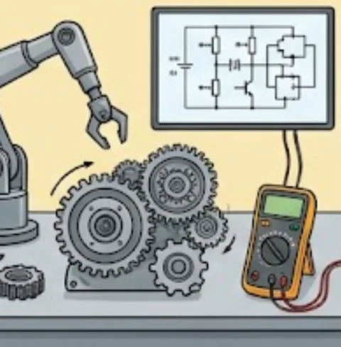
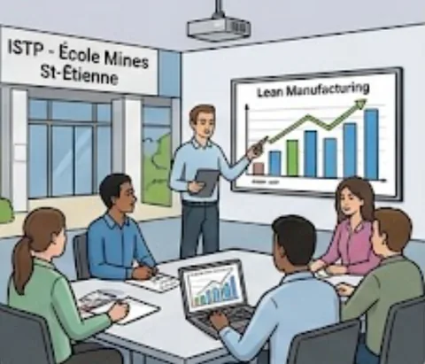
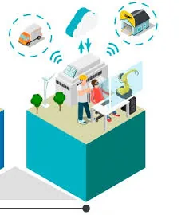
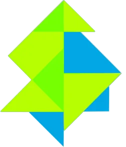
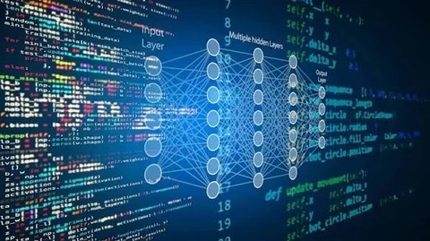
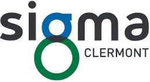

Ingénieur Génie Industriel, spécialisé en science des données
Diplômé ingénieur en Génie Industriel, avec un Mastère Spécialisé en Science des Données. Depuis 4 ans, je travaille sur le digital appliqué à l’industrie : collecter et exploiter des données machines, développer des outils, former les utilisateurs. Je l’ai fait chez Constellium, puis chez Michelin Motorsport.
Ce que j’aime, c’est partir du terrain : comprendre ce qui coince dans un atelier ou dans un processus, puis trouver l’outil qui aide vraiment. Je cherche un poste où continuer à faire ça, au contact des équipes industrielles.
25 → 57machines équipées en collecte de donnéesConstellium Issoire
35collaborateurs formés aux outils digitauxConstellium Issoire
100 k€+d’économie annuelle estimée grâce à une analyse de donnéesConstellium Issoire · Braincube
12 sem.de mission à l’internationalConstellium Singen, Allemagne
01 · mon parcours
Du terrain à la donnée.
Une trajectoire construite autour de la performance industrielle, de la digitalisation et de l’analyse des données. Pour chaque étape : ce que j’ai fait, et pourquoi je l’ai choisie.
01 / 082002 — 2020
ÉTAPE 01

Une enfance au cœur des volcans d'Auvergne
Nébouzat · Rochefort-Montagne · Clermont-Ferrand
Originaire de Nébouzat, au cœur de la chaîne des Puys, j’ai grandi dans un environnement où comptaient l’entraide, la simplicité et la réalisation de tâches manuelles, type bricolage. Scolarité primaire à Nébouzat, collège à Rochefort-Montagne, puis lycée Lafayette à Clermont-Ferrand, où j'ai obtenu un baccalauréat scientifique option Sciences de l'Ingénieur.
Attiré très tôt par les sciences et la technique, je cherchais à comprendre comment les choses fonctionnent concrètement.
Pourquoi cette étapeJe voulais découvrir rapidement le monde industriel avant de m'engager dans de longues études : j'ai choisi un DUT Génie Industriel et Maintenance plutôt qu'une classe préparatoire.
AuvergneSciencesSciences de l'Ingénieur
02 / 082020 — 2022

ÉTAPE 02
DUT Génie Industriel et Maintenance
Université Clermont Auvergne
J'ai intégré le département Génie Industriel et Maintenance de l'Université Clermont Auvergne, qui m'a donné de solides bases techniques et une vision globale du fonctionnement des installations industrielles.
Au programme : électricité industrielle et schémas électriques, mécanique et résistance des matériaux, hydraulique et pneumatique, robotique, automatisme et maintenance des systèmes.
Pourquoi cette étapeCes bases techniques, je pouvais les confronter au réel dès la deuxième année grâce à l'alternance : la meilleure façon de savoir si le monde industriel me correspondait.
Technicien de maintenance en alternance · Usine desserts (La Laiterie de Rians)
Au sein de l'équipe maintenance de l'usine desserts, j'ai évolué dans un environnement agroalimentaire exigeant : interventions de terrain sur les équipements de production, dans le respect des normes d'hygiène et de sécurité, pour assurer la continuité de la production.
Maintenance préventive et corrective, diagnostic de pannes multi-techniques (électrique, mécanique, pneumatique), soudure MIG, et contribution à la fiabilité des installations et à la réduction des dysfonctionnements.
Pourquoi cette étapeCette immersion m'a fait découvrir la réalité des ateliers et le poids de la maintenance dans la performance d'une usine. Elle a confirmé mon envie de viser des fonctions à plus forte responsabilité.
Maintenance préventiveMaintenance correctiveDiagnostic de panneSoudure MIGAgroalimentaire
04 / 082022 — 2025

ÉTAPE 04
Diplôme d'Ingénieur en Génie Industriel
ISTP · École Nationale Supérieure des Mines de Saint-Étienne
J'ai poursuivi à l'ISTP, dans le cadre du diplôme d'ingénieur en Génie Industriel de l'École des Mines de Saint-Étienne, en alternance : électrotechnique, mécanique, thermodynamique, mathématiques appliquées, statistiques et gestion industrielle.
Lean Manufacturing, Supply Chain, gestion de projet et management d'équipe m'ont donné une vision globale de la performance industrielle, avec une approche orientée amélioration continue et conduite du changement.
Pourquoi cette étapeAprès le terrain, je voulais comprendre l'usine dans son ensemble : flux, projets, équipes, performance. Le cursus d'ingénieur m'a apporté cette vision d'ensemble.
Génie industrielLean ManufacturingSupply ChainGestion de projet
05 / 08SEPT. 2022 — SEPT. 2025

ÉTAPE 05

Ingénieur Transformation Digitale Industrielle
Constellium Issoire · Alternance · Service Projets Digitaux
Chez Constellium, acteur de la transformation de l'aluminium (aéronautique, spatial, défense), j'ai travaillé sur toute la chaîne de valeur de la donnée industrielle : de l'acquisition des données machines jusqu'à leur exploitation pour l'aide à la décision.
Mise en place et fiabilisation de systèmes de collecte connectés aux automates (IBA), contribution à des projets de maintenance prédictive, tableaux de bord Power BI pour les KPI énergétiques (électricité, eau), formation des utilisateurs, et analyses Braincube ayant identifié un levier de performance estimé à plus de 100 k€ par an.
Pourquoi cette étapeC'est là que j'ai vu le cycle de vie complet de la donnée, de la machine à la décision, et que ma curiosité pour la data est devenue une vraie orientation de carrière.
Constellium Singen · Département Maintenance · 12 semaines
Au sein du département Maintenance de Constellium Singen, j'ai développé des tableaux de bord Power BI pour suivre les indicateurs de maintenance (MTBF, MTTR, taux de disponibilité des équipements).
J'ai aussi déployé en autonomie une solution de maintenance prédictive (CCM), déjà utilisée à Issoire, pour anticiper les défaillances et améliorer la fiabilité des installations, dans un environnement anglophone et multiculturel.
Pourquoi cette étapeJe voulais élargir mon expérience à l'international, gagner en autonomie et montrer qu'une solution éprouvée sur un site pouvait être transférée sur un autre.
Power BIMTBF / MTTRMaintenance prédictive (CCM)International
07 / 082025 — 2026

ÉTAPE 07

Mastère Spécialisé Expert en Science des Données
SIGMA Clermont
Pour approfondir mes compétences data, j'ai intégré le Mastère Spécialisé Expert en Science des Données de SIGMA Clermont : statistiques, Machine Learning, Deep Learning, Business Intelligence, développement Python, bases de données PostgreSQL et ingénierie des données.
Les projets réalisés m'ont permis de mettre en pratique les concepts étudiés.
Pourquoi cette étapeAprès avoir découvert la data sur le terrain, je voulais en maîtriser les fondements pour concevoir des solutions plus solides.
J'ai contribué à des projets de transformation digitale visant à améliorer l'efficacité opérationnelle et la valorisation des données. Mon principal projet : digitaliser le processus des Demandes d'Achats Électroniques (DAE), jusque-là basé sur Excel, macros et échanges d'e-mails, avec une solution intégrée Power Platform (Power Apps, Power Automate, SharePoint, Power BI).
J'ai aussi travaillé sur des traitements de données avec Databricks, des tableaux de bord décisionnels, une étude de prévision des ventes de pneumatiques historiques par Machine Learning, et accompagné les utilisateurs dans la conduite du changement.
Pourquoi cette étapeRéunir les deux versants de mon parcours, le terrain industriel et la data, sur des processus métiers réels et dans un environnement exigeant en performance.
Power AppsPower AutomateSharePointPower BIDatabricksMachine Learning
Étape 1 sur 8
02 · mes projets
Trois projets dont je suis plutôt fier.
Des cas vécus en entreprise : le point de départ, ce que j’ai fait, et ce que ça a donné.
01
Michelin Motorsport · Alternance
Optimiser le processus de demandes d’achats
Le point de départ
Les Demandes d’Achats Électroniques (DAE) reposaient sur Excel, des macros et des échanges d’e-mails.
Ce que j’ai fait
Analyse du processus et des besoins avec les utilisateurs
Développement de l’application sous Power Apps
Validations et notifications automatisées avec Power Automate
Stockage SharePoint et suivi sous Power BI
Accompagnement des utilisateurs dans le changement
Ce que ça a donné
Un processus unique, intégré à Power Platform, à la place de fichiers et d’e-mails dispersés. Objectif visé : moins de tâches administratives et plus de traçabilité.
AvantExcel, macros, e-mails
→
AprèsPower Apps, Power Automate, SharePoint
Power AppsPower AutomateSharePointPower BIConduite du changement
02
Constellium Issoire · Alternance
Mettre en place et fiabiliser un système de collecte de données
Le point de départ
Il fallait collecter les données des machines connectées aux automates industriels (IBA) et s’assurer qu’elles remontaient correctement.
Ce que j’ai fait
Installation et configuration des systèmes IBA
Suivi des flux sous Power BI pour repérer les machines qui ne transmettent plus
Sauvegardes SVN, scripts Python et Batch
Formation des utilisateurs
Ce que ça a donné
Le parc de machines équipées est passé de 25 à 57, et 35 collaborateurs ont été formés.
Avant25 machines équipées
→
Après57 machines équipées
IBAPower BIPythonSVNFormation
03
Constellium Issoire · Alternance
Réduire la consommation de pièces mécaniques
Le point de départ
Comprendre l’usure de pièces mécaniques pour en réduire la consommation.
Ce que j’ai fait
Analyses des données de production avec Braincube
Test d’hypothèses d’amélioration du procédé
Identification d’un levier de performance
Ce que ça a donné
Une économie estimée à plus de 100 k€ par an.
AvantDes hypothèses à vérifier
→
AprèsUn levier identifié, plus de 100 k€ par an (estimé)
BraincubeAnalyse de donnéesAmélioration continue
ⓘ Les résultats présentés sont qualitatifs ou issus des éléments de mon CV. Les détails techniques et données internes restent volontairement confidentiels.
03 · mes compétences
Ce que je sais faire, et où je l’ai appris.
Des outils que j’ai réellement utilisés en entreprise, plutôt qu’une liste de logos.
Mes outils, et où je m’en suis servi
Power BIConstellium (KPI énergie), Singen (indicateurs de maintenance), Michelin (pilotage)
Power Apps, Power Automate, SharePointMichelin : digitalisation des demandes d’achats
Python, SQL, ETLConstellium (scripts, flux de données) et Mastère SIGMA
Databricks, Machine LearningMichelin (données, prévision des ventes) et Mastère SIGMA
IBA, BraincubeConstellium : collecte de données machines et analyses de procédé
Maintenance prédictive (CCM)Issoire, puis déploiement en autonomie à Singen
Ce que j’apporte en plus des outils
Je connais le terrain. J’ai été technicien de maintenance en usine avant de devenir ingénieur : je sais ce que vivent les équipes.
Je forme et j’accompagne. 35 collaborateurs formés : un outil n’a de valeur que s’il est adopté.
Je mène un sujet de bout en bout. De la collecte de la donnée à son exploitation, jusqu’à la formation des utilisateurs.
Je suis autonome. À Singen, j’ai déployé seul une solution de maintenance prédictive, dans un environnement international.
04 · contact
Une opportunité ? Écrivez-moi.
Je cherche un poste en data, solutions digitales ou transformation industrielle. Un message suffit, je réponds volontiers.